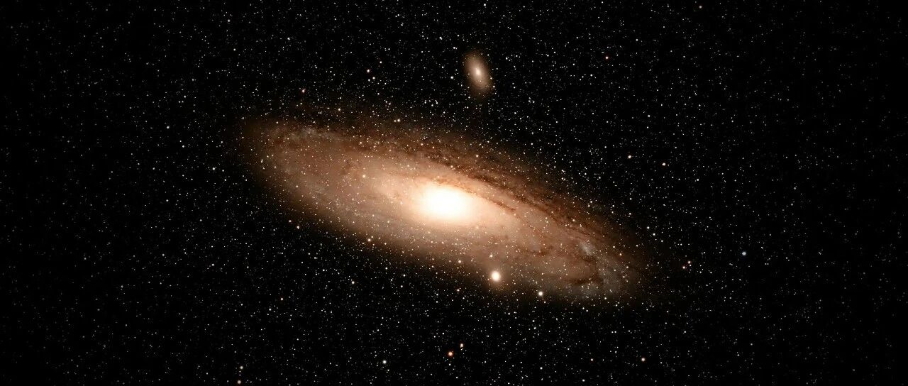

我后面的打算~
由于CPI数据低于市场预期，美股大涨。
这次的CPI数据这个数据，整个市场都在等待，因为它关系到美股的基本面是否发生了变化。
如果CPI高于预期，就会导致我之前一直强调的“通胀的反复”这个问题，这会导致美联储降息的频率和幅度减少，甚至有可能加息。这样的话，流入社会和美股的钱就会比市场预期的少，美股就会跌。
还好，略低于市场预期，说明美股的基本面没有恶化，短期内不会改变美联储降息的频率和幅度。
所以市场开始拉升、修复之前的跌幅。
其中还有一个原因，是接下去几天，川普要上台了，情绪更是开始助推，这个和之前预期的一致，接下去几个交易日，只要没有什么大的利空，美股正常是要上涨的。
纳指涨了2.45%，标普涨了1.83%，相对应ETF中的QQQ和SPY，分别涨了2.3%和1.82%，开始修复之前的跌幅。
消费板块，Costco、沃尔玛、麦当劳都微涨，宝洁微跌。
生物医药板块，礼来、默沙东、强生都微涨，联合健康微跌，诺和诺德涨幅2.14%；生物医药板块仍旧低迷，礼来由于减肥产品销售没达到预期，上一个交易日大跌。
大饼大涨，站上10万美元，作为“影子股”的MSTR也涨了5.39%，收盘价360美元。
我设置的380和385各卖50%没有变，我每次在这只股上的操作都会提前写得很详细，因为数据经过精算，相对有把握。
所有在它身上赚到的利润这次大多投进去了，没有动用到本金。这次如果能顺利按设置好的清仓，那在它身上几次操作下来的总收益就达到预期的千万刀。
这次做完，我准备收手，不再碰MSTR了，涨再多也不碰，窗口期快结束了。
科技股板块，博通涨了1.47%，我还是觉得这货贵，但还是买了一点点（500股）进来观察，准备把AMD在130美元卖掉一半，转向博通。
这两个都可以做英伟达的备胎，防御用，防止踏空，二者的仓位占比控制在1%以内。
AMD涨了3.33%，修复119.96美元。这货的持股体验感差，备胎就是备胎。就这几个月的走势来看，属于“唉，妈的”，简称AMD。不过往中长期看看吧。
英伟达涨了3.4%，收盘价136美元，我两个新账户已经在130完成建仓，126和120又设置了加仓。此外，个人账户和家庭账户也设置了防御型买入价。
苹果涨了1.97%，收盘价237.87美元，新账户设置的买入价没能成功买入，等。
微软涨了2.56%，收盘价426.31%，微软过去一年的走势，真的有点微软，不坚挺，看好中长期。
台积电涨了2.66%，收盘价206.8美元。个人账户设置的225和232各减仓5%没变，新账户设置的买入价190、185也没变。
谷歌涨了3.1%，收盘价196.98美元。个人账户和家庭账户短期内没打算减仓，余下的应该会长期持有了，负成本或低成本了。
谷歌在189-192区间有强力支撑，新账户等了挺久，愣是没有跌到加仓点184.5。
Meta涨了3.85%，收盘价617美元。Meta有588以下的价格出现，我新账户会果断捞。至于个人账户和家庭账户减仓，暂时没考虑，等680+再说，会中长期持有。
特斯拉涨了8%，收盘价428美元。之前几次写过，川普上任前后特斯拉会有一波拉升，现在它就要来了。我预计会在21-22日左右减仓一些特斯拉，将仓位占比控制在4%以下。
特斯拉太妖了，大涨大跌是常态，属于七巨头中最妖的个股，常常把多头和空头都打爆。
市场散户很喜欢，但我不太喜欢，因为不好控制回撤。
市场好的时候，多赚一点；市场跌的时候，回撤小一点，这才是正常投资人应该追求的。
短时间内收益率高，净值增长快，从来不是决定长期收益的最重要因素。能控制回撤，让资金曲线稳步上行，才是决定长期收益率最关键的要素。
不然你的投资很容易像狗熊掰棒子，来来回回瞎忙，只是看起来热闹而已。
一年三倍的人多，但三年一倍的少，就是控制回撤不行的原因。大多数投资人都死在了控制不住回撤上，最终没有成长为大资金。
甚至一夜回到解放前，还倒亏了本金。然后反复在亏亏赚赚这个循环里面 ，不断的打转转。
控制回撤是高手的核心能力，也是决定长期收益率最关键的要素。
这也是为什么我往往会预留足够的资金和仓位，设置好防御型买入价的原因，核心就是控制回撤幅度。
常胜将军和不败将军，后者其实比前者厉害。投资的前提是保值/风险控制，其次才是增值/回报率；
在投资中，其实防守比进攻重要，能让自己处于“进可攻退可守”的境地，那就更好。
… …
昨晚小儿子一直吐，一整夜没停歇，估计是诺如病毒或流感。
最近这两个比较严重，大家多注意点，平时家里可以备好药。
我一夜没睡好，很久没熬夜了，以前会熬夜盯盘，现在都是提前设置好，不需要看盘，每天就看5-10分钟，心里就有数。
这会准备补觉，上了40岁以后，尤其是作息调整正常后，再熬夜真是一件痛苦的事。
就这样吧。